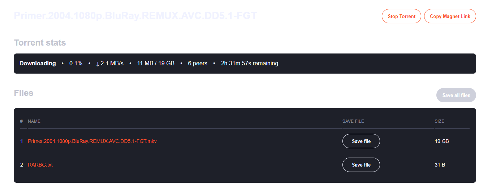
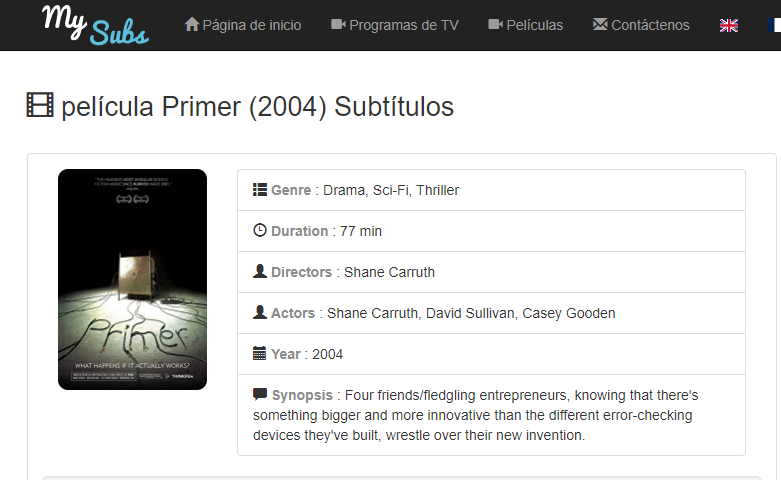

A continuacion te daremos una lista de herramientas necesarias
Cuando buscamos una peli, no utilizamos espacio en los caracteres "_". Se utiliza "." Por ejemplo: "PRIME.2004.hd.bluray"
Las semillas nos indican la cantidad de usuarios que poseen el Torrent que buscamos.
Las que se encuentran en "VERDE" nos indican la cantidad de usuarios que disponen de esa Torrent
Luego de seleccionar nuestra semilla tildaremos el icono de "MAGNET", que nos abrira a la descarga
en nuestro "BittorrentWEB"
Este paso nos llevara a la pagina de BittorrentWEB, Daremos al boton START y nuestro archivo comenzara a descargar
Guardaremos nuestro archivo con la opcion "SAVE FILE" en nuestra pc
Notaremos que nuestro archivo puede contener extenciones que los reproductores por defecto no son capaces de reproducir o necesitan "CODECS" que son pagos.
Una buena opcion para no tener que depender de ello es el programa "VLC PLAYER"
Si, recorda que la mayoria de los torrents se encuentran en su idioma original a no ser que tenga la opcion de más Subtitulos (raramente aparece esa opcion)
Asi que aca te dejo una pagina para descargar los subtitulos en español
